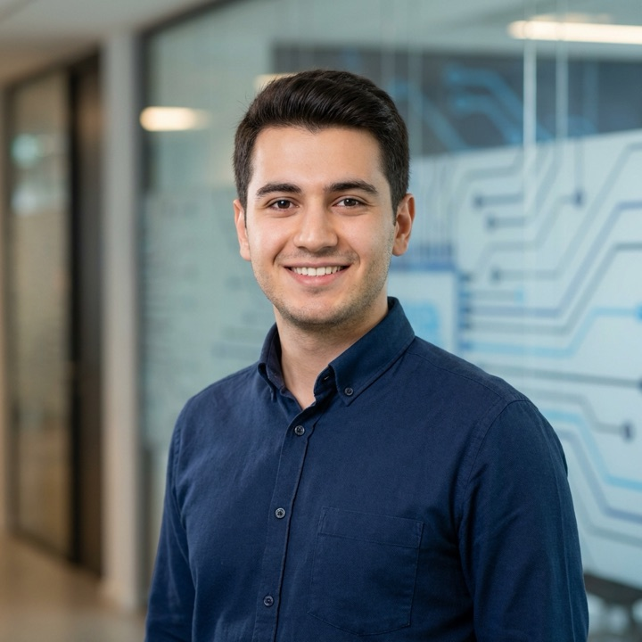

Istanbul · MIS, class of 2026
I keep systems running, and I build small, practical tools around them.
I'm Ozan Emre Yıldız. I study Management Information Systems and work in IT technical support. Outside of that I self-host my home network's infrastructure, write monitoring scripts in Python and build privacy-minded web apps.
Selected work
2023–2026
-
WhisperLink
A one-to-one chat you start by sharing a link. The Node.js server only creates nicknames and single-use invite links that expire after 24 hours, then helps the two browsers find each other. After that, messages and images go peer-to-peer over a WebRTC data channel, so the server never stores the conversation. It installs as a PWA, and ending a chat deletes the messages.
Source on GitHub -
Amazon Depo Monitor
A personal tracker for discounted iPhone listings on Amazon Warehouse. It finds listings from saved searches and product pages, normalizes and scores them, keeps state in SQLite and sends Telegram alerts with action buttons. A small FastAPI dashboard shows what it has seen. It's built to behave: per-domain rate limits, a safe mode that's on by default, saved HTML snapshots when a parser breaks, and no automated checkout. Buying stays a human decision.
Private repository -
Home network & security lab
Network-wide ad and tracker blocking for every device at home. AdGuard Home runs in Docker on a Mac with a static IP, the Keenetic router hands it out as the DNS server over DHCP, and upstream queries go out encrypted over DNS-over-HTTPS to Quad9. Next to it is a Kali Linux VM and an OWASP Juice Shop container that I use to practice web application security.
-
Todo Calendar
A task list that lives on a calendar. You create, edit and complete tasks with due dates in a React and Material UI front end, backed by an Express REST API and MongoDB. It's set up to deploy on Render.
Source on GitHub
Earlier & smaller
- Secure NotepadA Tkinter notepad that encrypts notes with Fernet before saving them2023 · Python
- Tkinter LearningNotes, examples and mini-projects from learning Python GUIs2024 · Python
About

I'm finishing a degree in Management Information Systems in Istanbul and graduating in 2026. Day to day I work in IT technical support: setting up and fixing hardware, looking after Windows machines, tracking assets and getting people working again.
That work taught me to automate the boring parts and write things down. Most of what I build starts with a problem I actually have, like a noisy network, a deal I don't want to miss or a chat that shouldn't sit on someone's server. I build PCs too, and I like knowing how a system works from the hardware up.
- Support & ops
- Windows 11, hardware diagnostics, PC building, IT asset management, ITIL 4 practices
- Infrastructure
- Docker, Linux, DNS / DHCP, home networking
- Code
- Python, JavaScript / Node.js, React, SQL, Excel & VBA
Contact